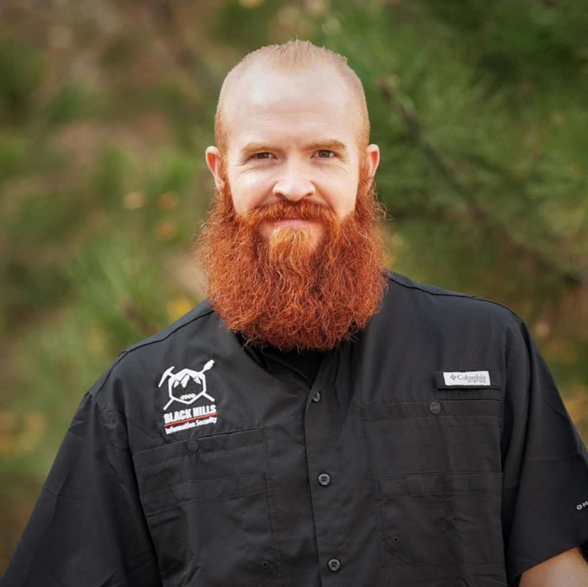

Alex Kirk
Talk Title: Using Bro – Zeek Data for IR and Threat Hunting

Alex is a veteran open source security evangelist with a deep engineering background. In 10 years with Sourcefire Research (VRT), he wrote the team’s first malware sandbox and established its global customer outreach and intelligence sharing program. He has spoken at conferences across the globe on topics from “Malware Mythbusting” to “Using Bro/Zeek Data for IR and Threat Hunting”, and was a contributing author for “Practical Intrusion Analysis”, and oft-used textbook for university courses on IDS.
Top
Allan Liska
Talk Title: Turn Down for RaaS: Seperating Hype from Reality in the Ransomware as a Service Market
Allan Liska is an intelligence analyst at Recorded Future. Allan has more than 15 years’ experience in information security and has worked as both a blue teamer and a red teamer for the intelligence community and the private sector. Allan has helped countless organizations improve their security posture using more effective and integrated intelligence. Allan is also one of the organizers of BSides Bordeaux and has presented at security conferences around the world. He is the author of The Practice of Network Security, Building an Intelligence-Led Security Program, and Securing NTP: A Quickstart Guide and the co-author of DNS Security: Defending the Domain Name System and Ransomware: Defending Against Digital Extortion.
Top
Alyssa Miller
Talk Title: Loosing our Reality: Understanding and combating the deep fake threat
Alyssa Miller is a hacker, security evangelist, cyber security professional and public speaker with almost 15 years of experience in the security industry. She has always had a passion for deconstructing technology, particularly since buying her first computer at the age of 12 teaching herself BASIC programming. In her career, Alyssa has performed all forms of security assessments but given her developer background, she had a dedication to application security. She currently specializes in working with business and security leaders to design and deploy effective security programs that strengthen enterprise security strategy. Alyssa is also committed to evangelizing security. Not only does she speak internationally at various industry, vendor and corporate events, Alyssa also engages in the community through her online content, media appearances, and security community activism. Her journey through security was recently featured in an article by Cybercrime Magazine. She’s also been recognized in Peerlyst’s e-Book “50 Influential Penetration Testers”. Alyssa is treasurer and member of the board for Women of Security (WoSEC) and is an Application Security Advocate for London-based Snyk Ltd.
Top
Anshu Gupta
Talk Title: Mobile Application Security – What you need to know?

Anshu Gupta is a senior level security practitioner who has Fortune 500 security consulting experience at Ernst & Young and KPMG where he worked at companies like Microsoft, Salesforce, Oracle, Cisco, McAfee, Adobe, Yahoo, GAP, Kaiser among others. He then moved on to get startup experience at Coupa Software (now a public company), HelloSign (acquired by DropBox) where he was the first security hire and had to build the whole security program from scratch and hired the information security team as well. He is currently serving as the Head of Security Engineering at an innovative Fintech startup. Anshu has a Masters degree in Computer Science and holds the CISM, CISA and CIPP certifications among others.
Top
Ashley Newsome
Talk Title: Critical Infrastructure: The Future Impact of Industry 4.0 on the Security of Healthcare

Ashley Newsome is a senior at the University of Tampa (UT) majoring in Cyber Security and double minoring in Business Analytics and Management Information Systems (MIS). Throughout her academic career at UT, Ashley has conducted and presented three research projects discussing Botnets, SCADA systems, and now IoT and healthcare at various conferences. Her interest in research peaked during her 2.5-year experience as a student employee in UT’s Information Technology department. Her experience and interest have led her to a career in a hybrid space of in Linux systems, application administration/dev-ops, and emerging technology, upon graduation.
Top
Ayush Enkhtaivan
Talk Title: Critical Infrastructure: The future impact of Industry 4.0 on the Security of Healthcare

Ayush Enkhtaivan comes from Ulaanbaatar, Mongolia and she is currently finishing up her M.S in Cybersecurity at The University of Tampa. Ayush holds an MBA in Finance from Gannon University and a B.E. from the University of International Business and Economics in Beijing, China. She has been previously employed by one of the Big 4 and has years of experience working in Marketing, Foreign Trade, and Finance, locally and internationally.
Top
Beau Bullock
Talk Title: How to ARM Yourself
Beau Bullock is a Senior Security Analyst and Penetration Tester and has been with Black Hills Information Security since 2014. Beau has a multitude of security certifications and maintains his extensive skills by routinely taking training, learning as much as he can from his peers, and researching topics that he lacks knowledge in. He is a constant contributor to the infosec community by authoring open-source tools, writing blogs, and frequently speaking at conferences and on webcasts.
Top
Ben Rollin
Talk Title: Sucess with Defense in Debth. From the perspective of a Red Teamer
Ben Rollin is the founder of Vartai Security, LLC and has a decade of information security consulting experience focusing on technical IT Audit, risk assessments, web application security assessments and network penetration testing against large enterprise environments. Ben has worked as a consultant for a “Big 4” audit firm performing a wide range of information security consulting activities including IT controls audits, vulnerability and risk assessments, security program review, web application security assessments, and penetration testing. Ben has assisted state/local and federal government agencies such as the Department of Health and Human Services, the Department of Homeland Security, the United States Air Force, and the state of Maryland with complex information security needs. He also has aided private sector companies in a variety of industries (such as Finance, Healthcare, and Retail) with their information security and compliance programs.
Top
Brad Duncan
Talk Title: Malware Traffic Analysis
Brad Duncan is a currently a Threat Intelligence Analyst for Palo Alto Networks Unit 42. He specializes in network traffic analysis of malware infections. Brad is also a handler for the Internet Storm Center (ISC) and has posted more than 140 diaries at isc.sans.edu. He routinely blogs technical details and analysis of infection traffic at www.malware-traffic-analysis.net, where he provides traffic analysis exercises and over 1,600 malware and pcap samples to a growing community of information security professionals.
Top
Casey Martin
Talk Title: Network Gravity: Exploiting an Enterprise Network
Casey Martin is an information security professional with a curiosity for enabling blue team operations. Casey has operated in all technical aspects of security operations as well as leading the customer enablement effort as the Director of Security Operations for some of the worlds most trusted brands. In his current role, Casey leads the Threat Management function at his organization which engages him in innovative functions such as SOC research and development, threat intelligence, and red team operations. Prior to moving to Tampa, Casey held security roles in the energy and educational sectors which was made possible through his education at the Rochester Institute of Technology.
Top
Charles Herring
Talk Title: Breaking NBAD and UEBA Detection
Charles' dedication to maturing the craft of InfoSec is built on a diverse career path across the industry. He started his career in InfoSec in the US Navy in 2002 serving as the Network Security Officer at the US Naval Postgraduate School. After leaving active duty, he was a contributing product reviewer for InfoWorld magazine focusing on network security products. Charles spent 7 years running Herring Consulting, a company dedicated to process orchestration, data sharing, and marketing. In 2012, Charles joined the Lancope team as a pre-sales engineer, promoted to Consulting Security Architect and later as Strategic Account Manager following the acquisition of Lancope by Cisco. In 2014, Charles partnered with veterans of the military, law enforcement and cyber security to research new approaches to improve the craft of cyber security operations. In 2016, that research resulted in the forming of WitFoo. When not working with cyber security heroes, Charles enjoys SCUBA divining with his wife, Mai.
Top
Chris Lyne
Talk Title: Extracting an ELF from an ESP32
Chris enjoys dissecting complex applications and lives for the hunt. Despite having deep roots in software development, his true passion is security. An avid learner, Chris is continuously evolving his skills, capabilities and methodologies. Chris believes any problem can be solved with knowledge, intelligent decisions, and sheer grit.
Top
Dave Summit
Talk Title: So You Want to Be a CISCO!?
Justin has over twenty years of experience in system administration, software development, and information security. His core skills include regulatory and contractual compliance, program management, payment card standards, and general governance practices and frameworks. He is the founder of episki, a cloud-based governance tool geared to help smaller organizations manage their security programs, an IANS faculty member, and serves as a Principal Consultant at TrustedSec.
Before his current roles, Justin consulted with Fortune 1000 companies in information systems, audit, governance, and information security. He has led the governance and security practices for prominent eCommerce and large financial services companies. Additionally, Justin has spoken at conferences concerning risk management, payment card industry (PCI), security leadership, and general information security practices.
Top
David Dillard
Talk Title: Practical Crypto Review for Developers
David has worked as a software professional for over 30 years. The first part of his career was spent developing mass storage software. During this time he represented several employers in storage related standards organizations, primarily the Storage Networking Industry Association (SNIA). For the last ten years he’s been involved in application security, including five years in the product security group at Symantec. In his current position he focuses primarily on the management of third party software and cryptography.
Top
David Switzer
Talk Title: RF for Red Team
David E. Switzer has over 20 years of experience in systems and network security. Cert alphabet soup: GSE #136, G[cia|cih|awn|sec|stuff]), OSCE, CISSP and ITILv3 (keeps it gangsta). He currently is working on RF/IoT and ICS/SCADA projects for his employer, while off time amusements include RF, wireless networks, hardware hacking, and other expensive time sinks.
Top
Deborah Steele
Talk Title: RF for Red Team
Deborah is the VP of Information Technology and Cyber Security at Fox News Network. She has been with Foxnews since its inception in 1996. Prior to this she attended The Copper Union for the Advancement of Science and Art and then went on to get a master’s in criminal justice with the specialization in cyber crime. She has held just about every job within IT. She has led the company’s Information Technology Infrastructure organization where she was responsible for developing and maintaining network, computing, server, storage, collaboration and infrastructure solutions across the enterprise. In this role she provides leadership for the continued development of an innovative, robust, and secure information technology environment. She has been involved in every aspect of IT with focus around building and supporting our broadcast operation. She is a member of WITI and was appointed to USF’s Cyber security Certificate Program Advisory Committee.
Top
Derek Banks
Talk Title: How to ARM Yourself
Derek Banks has been a security analyst and penetration tester for Black Hills Information Security since 2014, but he has been a part of the IT industry for his entire career. Since graduating college with a BS in Computer Information Systems, Derek has explored many different Information Technology jobs, from working at a help desk to being a network and systems administrator. He has experience in forensics, incident response, creating custom host and network-based monitoring solutions, penetration testing, vulnerability analysis, and threat modeling. Derek’s favorite aspects of working at BHIS include learning from his coworkers and helping customers better their security posture. When he isn’t participating in CtF competitions or red team engagements, Derek enjoys spending time with his family, staying physically fit, and playing the bass guitar.
Top
Erich Kron
Talk Title: Cyber Defense In The Modern Org: 6 Low-Cost Tips To Secure Your Organization
Erich Kron, Security Awareness Advocate at KnowBe4, is a veteran information security professional with over 20 years of experience in the medical, aerospace manufacturing and defense fields. He is the former security manager for the US Army’s 2nd Regional Cyber Center-Western Hemisphere and holds CISSP, CISSP-ISSAP, MCITP and ITIL v3 certifications, among others. Erich has worked with information security professionals around the world to provide the tools, training and educational opportunities to succeed in Information Security.
Top
Filip Chytry
Talk Title: IoT Vulnerabilities in Tampa Bay
As the Threat Intelligence Director at Avast, Filip hacks and conducts experiments to illustrate the dangers of unsecured devices. He even crusades for cyber security in his free time, helping nonprofits stay safe in an insecure world.
Top
Gideon Rasmussen
Talk Title: Designing a 3rd party Risk Management Program
Gideon Rasmussen is an Information Security Consultant with 20 years of experience in corporate and military organizations. Gideon has designed and led programs including Information Security (as a CISO), PCI – Payment Card Security, Supplier Assessment, Application Security and Information Risk Management. Gideon has authored over 30 information security articles. He is a veteran of the United States Air Force, a graduate of the FBI Citizens Academy and a recipient of the Microsoft Most Valuable Professional award. Gideon has also completed the Bataan Memorial Death March (4 occurrences).
Top
Gina Yacone
Talk Title: Seat at the Table: Security Leadership Through Tabletop Exercises
Gina Yacone is a cyber security consultant and vCISO with Agio. Gina is an information security strategist and speaker with a unique technical vision and business acumen. She is responsible for educating organizations about the ever-changing cyber security landscape and helping them build a dynamic cyber security program. She loves focusing on the unique challenges today’s organizations face.
Gina is an active member in the local North Carolina chapters of ISSA, ISC2, Security + Beers, DefCon919 and OakCity Lock Sports. Gina sits on the board for Women in Cyber security (WiCyS) North Carolina, Tweens & Technology, BsidesRDU as well as the Information Services Advisory Board for the Town of Cary.
Top